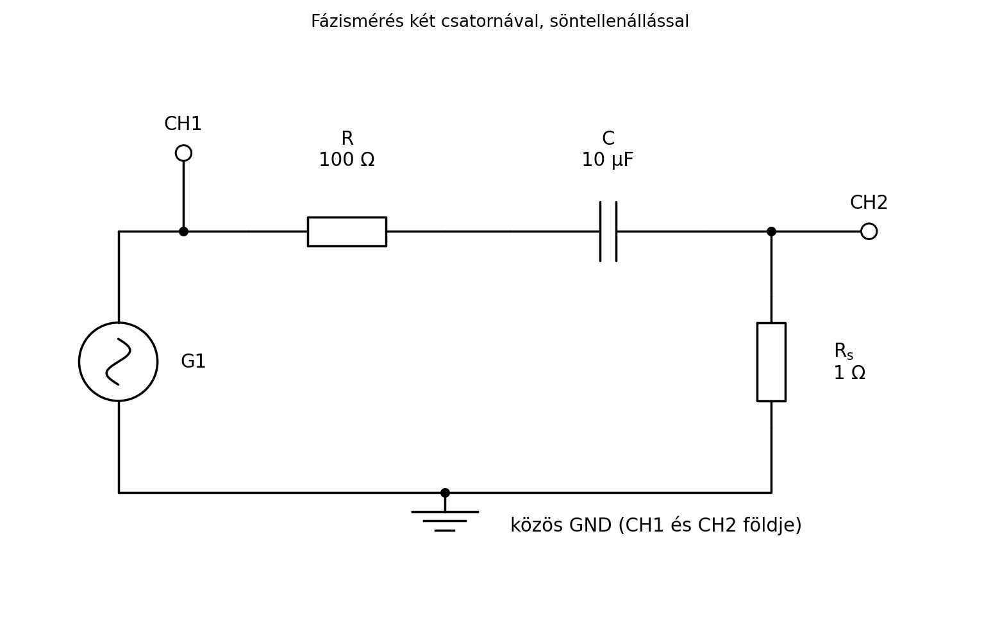

A munkahelyen előfordul, hogy a multiméter csak egyetlen számot mutat, de a jelet nem látjuk: nem tudjuk, hogy a tápegység kimenetén valóban tiszta egyenfeszültség van-e, vagy ráül-e zaj, és azt sem látjuk, hogy egy frekvenciaváltó kimenő jele milyen alakú. Ilyenkor az oszcilloszkóp a szemünk: megmutatja a feszültséget az idő függvényében.
Az oszcilloszkóp alapfeladata, hogy egy feszültségjelet vízszintes időtengely és függőleges feszültségtengely mentén jelenítsen meg. A modern, digitális tárolós oszcilloszkóp (DSO) mintavételezi a jelet, eltárolja a mintákat, és a képernyőn folyamatosan frissülő görbét rajzol.
Definíció. Az oszcilloszkóp feszültség–idő diagramot rajzoló mérőműszer. A vízszintes tengely az idő, a függőleges tengely a pillanatnyi feszültség.
A képernyő-leolvasást a Példa 1 ábráján gyakoroljuk; a szerelői gyakorlatban előforduló jelalakok katalógusa a „Jelalakok a szerelő gyakorlatában” alszakaszban (a Jelalakok szakasz végén) van.
Interaktív ábra. A HTML-kiadásban az oszcilloszkóp-szimulátoron (a Példa 1 után) beállíthatod a jelalakot (szinusz, négyszög, fűrész, PWM), a jel amplitúdóját, frekvenciáját és egyenfeszültségű összetevőjét, a TIME/DIV és VOLT/DIV fokozatot, a trigger szintjét és a csatolást (DC/AC/GND); a „Mérd meg” mezőben a leolvasott osztásszámot visszajelzés ellenőrzi. A szimulátor gyakorló módja (a Feladatok végén) ismeretlen, véletlen képernyőt ad három szinten, és a kiszámolt frekvenciát, csúcstól csúcsig és effektív értéket (PWM-nél a kitöltési tényezőt) is ellenőrzi. A statikus ábra a Példa 1 képernyőjét mutatja osztásráccsal.
Az oszcilloszkóp képernyőjén a rács osztásokból áll, jellemzően 8 vagy 10 osztás vízszintesen és 6 vagy 8 osztás függőlegesen. A leolvasáshoz két beállítást kell ismernünk:
Szabály. A TIME/DIV (időalap) azt adja meg, hogy egy vízszintes osztás hány másodpercet (ms, µs, ns) jelent. A VOLT/DIV (érzékenység) pedig azt, hogy egy függőleges osztás hány voltot (V, mV) jelent.
Ezért ha egy jelet látunk, a feszültséget a függőleges osztások számából, az időtartamot pedig a vízszintes osztások számából kapjuk meg:
Továbbvitt eredmény. A jelalakok (szinusz, négyszög, fűrész, PWM, egyenirányított jel) felismerése és paramétereik leolvasása közvetlenül szükséges az Egyenirányítók, szűrők, stabilizátorok, kapcsolóüzemű táp és PFC alfejezetben, ahol oszcilloszkópos hullámformákkal ellenőrizzük az áramköröket.
Definíció. A csúcsérték () a jel legnagyobb kitérése a nullához képest. A csúcstól csúcsig érték () a pozitív és negatív csúcs távolsága. Az effektív érték az a fiktív egyenérték, amely azonos ellenálláson ugyanakkora átlagos hőteljesítményt hoz létre, mint a váltakozó jel.
Szinuszos jelnél a kapcsolat:
Négyszögjelnél, ha a kitérés szimmetrikus, az effektív érték megegyezik a csúcsértékkel. Más jelalakoknál az összefüggés más, ezért oszcilloszkóppal mért jelalakoknál az effektív értéket nem szabad automatikusan szinuszos képlettel számolni.
A középérték (egyenáramú összetevő) a jel egy periódusra vett átlaga; ezt mutatja a DC-állású multiméter. Az effektív érték a hőhatást jellemzi. A kettő aránya a jelalaktól függ ( a csúcsérték, a kitöltési tényező 0 és 1 között):
| Jelalak | Középérték (DC) | Megjegyzés | |
|---|---|---|---|
| szinusz | 0 (egyenirányított: ) | hálózat | |
| szimmetrikus négyszög | 0 | váltakozó előjelű | |
| háromszög, fűrész (nullára szimmetrikus) | 0 | ||
| egyutas egyenirányított szinusz | egy dióda | ||
| kétutas egyenirányított szinusz | híd, szűrés nélkül | ||
| unipoláris PWM () | frekvenciaváltó, LED-szabályozás |
A triggerelés az egyik legfontosabb beállítás, mert enélkül a jel folyamatosan fut a képernyőn, és lehetetlen leolvasni.
Definíció. A trigger azt a feltételt adja meg, amelynél az oszcilloszkóp elkezdi rajzolni a jelet. A leggyakoribb mód a feszültségszinthez és élhez kötött indítás: például a jel emelkedő éle átlépi a beállított feszültségszintet.
Gyakorlati szabály. Mindig válasszuk ki a trigger forrását (általában CH1 vagy a vizsgált csatorna), a trigger élt (emelkedő vagy lefutó él) és a trigger szintet a jel tartományán belül. Az AUTO mód automatikusan mutat képet trigger nélkül is, de a kép lehet instabil; NORMAL módban a görbe csak érvényes triggernél frissül.
Csatolás alatt az oszcilloszkóp bemenetét értjük:
Ha például egy 5 V-os egyenáramra ültetett 2 V csúcstól csúcsig szinuszt vizsgálunk, DC csatolásban a görbe 4 V és 6 V között mozog, AC csatolásban pedig −1 V és +1 V között.
A kétcsatornás oszcilloszkóp legnagyobb előnye, hogy két jel egyidejűleg látszik. Ha a két jel azonos frekvenciájú, a fázisszöget a két azonos irányú nullátmenet közötti időből és a periódusidőből kapjuk:
Amelyik jel előbb megy át a nullán (ugyanabban az irányban), az siet.
Az áram közvetlenül nem látható: egy kis söntellenálláson (például ) eső feszültséget mérünk, amely az árammal fázisban van és arányos vele, vagy áramszondát használunk.
Figyelem. A két csatorna földje a műszerben közös (és a védőföldeléssel is összekötött). A söntöt ezért a kör földpontjához kell tenni, és mindkét földcsipesz ugyanarra a pontra kerüljön; a máshová tett második földcsipesz rövidre zárja a kör egy részét. A mérés törpefeszültségű jelgenerátorról történik, hálózati körön nem.

Az oszcilloszkóp legnagyobb értéke, hogy a jel alakját is megmutatja. Négy gyakori alakot kell felismerni:
A négy alapjelalak tankönyvi; a villanyszerelő azonban olyan képekkel találkozik, amelyekből hibára következtet: lapos tetejű hálózati feszültség, egyenirányított és pufferolt jel hullámossággal, dimmer kimenete, kapcsolóüzemű táp tüskés áramfelvétele, frekvenciaváltó PWM-kimenete, relétekercs kikapcsolási tüskéje, kontaktuspergés. Az alábbi nyolc képernyő ezeket mutatja 10 × 8 osztásos rácson; mindegyiken leolvasható a VOLT/DIV és a TIME/DIV, a bal oldali „1 ▶” jel a csatorna nullszintje. A jelek képletből számolt szemléltetések, nem mért oszcillogramok.
Biztonsági korlát. A hálózati jeleket (1., 4. és 6. kép) csak differenciálszondával, jogosult személy méri (lásd a következő, biztonsági szakaszt); a földelt oszcilloszkóp földcsipeszét soha nem kötjük hálózati pontra.
Minden képnél előbb a beállítást olvasd le (VOLT/DIV, TIME/DIV, csatolás), csak utána a jelet: a 3. képen például ugyanaz a jel DC csatolással 24 V-os vonal, AC csatolással 0,5 V/osztáson jól látható fűrészes hullámosság. A képekhez tartozó kérdések a Feladatok 7–8. feladatában vannak; a HTML-kiadásban képenként lapozhatók, a válasz lenyitható. A dimmer fázishasított jelét az Erősáramú félvezetők: tirisztor, triac, IGBT, MOSFET, az egyenirányító kimeneti jelét és a diódaáramot az Egyenirányítók, szűrők, stabilizátorok, kapcsolóüzemű táp és PFC alfejezet magyarázza. Kommunikációs vagy buszvezetéken a villám okozta túlfeszültség elleni védelemről lásd: Túlfeszültség-védelmi eszközök (SPD): típusok és beépítés.
Az oszcilloszkóp mérőbemenetének földpontja általában össze van kötve a műszer védőföldelésével. A mérőfej földcsipesze a mérőkábelen és a műszeren át a védőföldeléssel (PE) van összekötve. Ha a földcsipeszt egy PE-hez képest feszültség alatti pontra kötjük – a fázisra, vagy egy kapcsolóüzemű táp primer oldali „földjére” –, a csipesz és a PE között zárlat jön létre: ív keletkezik, a mérőfej és a vezeték leéghet. A hegy önmagában nagy impedanciájú, de hálózati csúcsfeszültségre csak megfelelő névleges feszültségű és CAT-besorolású mérőfej köthető. Hálózati feszültségű jel vizsgálatához (a) nagyfeszültségű differenciálszondát használj, amelynek CAT-besorolása és névleges feszültsége megfelel a mérési pontnak; vagy (b) a vizsgált készüléket (és nem az oszcilloszkópot!) tápláld leválasztó transzformátorról, oktatói felügyelet mellett. Tilos az oszcilloszkópot leválasztó transzformátorról táplálni vagy a védővezetőjét bármilyen módon megszakítani: ekkor a műszer háza és a BNC-testek feszültség alá kerülhetnek. A 10:1-es passzív mérőfej névleges feszültségét és CAT-besorolását is figyelembe kell venni (gyakran 300 V CAT II, ellenőrizendő: adatlap).
A passzív mérőfej részeit az alábbi ábra mutatja: az 1 BNC-csatlakozó a műszer csatornabemenetére kerül, a 2 kompenzációs trimmerrel a mérőfejet a bemenethez illesztjük, a 3 koaxiális kábel árnyékolása a műszer földjével (és így a PE-vel) van összekötve. A 4 kapcsolóval a csillapítás (×1/×10) választható, az 5 markolaton olvasható a csillapítás, a legnagyobb feszültség és a CAT-besorolás, a 6 ujjvédő perem mögött fogjuk a mérőfejet. A 7 horgos hegy rugós sapkája a mérőpontra akasztható, a 8 földcsipesz a földvezeték vége, a 9 rugós földelőcsúcs nagy frekvencián rövid földutat ad.
A 8 földcsipesz nem „második mérőcsúcs”: a kábelárnyékoláson és a műszerházon át közvetlenül a PE-hez kapcsolódik. Ha a mérőfejen ×10 állást választottál, a csatorna csillapítását is 10:1-re kell állítani, különben a leolvasott feszültség tizede a valódinak. A HTML-kiadásban a részekre mutatva megjelenik a nevük és a szerepük.
Tilos. Hálózati feszültségű jelet közvetlenül, földelt oszcilloszkóppal mérni, a mérőfej földcsipeszét a fázisra vagy a nullára kötni, és a védőföldelést elhagyni.
Az alábbi ábra a földcsipesz három helyzetét mutatja. Az 1. képen a csipesz egy törpefeszültségű, földelt kimenetű jelgenerátor GND kapcsán van: mindkét föld PE-potenciálon, a földvezetéken nem folyik áram. A 2. képen a csipesz egy hálózati készülék fázisára (vagy primer oldali „földjére”) került: a szaggatott nyíl a zárlati utat mutatja a csipeszen, a kábelárnyékoláson és a műszerházon át a PE-be. A 3. képen a hálózati jelet nagyfeszültségű differenciálszonda méri, amelynek mindkét bemenete leválasztott.
A 2. kép hibája nem a mérőhegyen, hanem a földcsipeszen múlik: a földcsipesz a PE-vel egy potenciálon van, ezért csak PE-potenciálú pontra köthető. Ha a vizsgált készüléket leválasztó transzformátorról kell táplálni, a transzformátor a vizsgált készüléket táplálja, sosem az oszcilloszkópot. A HTML-kiadásban a három helyzet egymás után megnézhető.
Szabvány. Az oszcilloszkóp bemenetére a mérési kategória (CAT) és a megengedett legnagyobb feszültség jelölése vonatkozik, jellemzően CAT II besorolással, vagy „mérési kategóriába nem sorolt” bemenettel (ez utóbbi hálózati ponton közvetlenül nem használható) (ellenőrizendő: MSZ EN 61010-2-030, műszer- és mérőfej-adatlap). A mérési kategóriákat a Multiméter, lakatfogó és mérési kategóriák alfejezetben ismertük meg, a pontos besorolást és a gyártói adatlap adja meg (ellenőrizendő: aktuális műszer és mérőfej).
Egy karbantartó szerelő azt tapasztalta, hogy a tápegység kimenő feszültsége multiméterrel mérve 24 V, de a szabályozó elektronika időnként hibásan működött. Az oszcilloszkóppal a 24 V-os kimenetet vizsgálva kiderült, hogy a 24 V-os kimeneten jelentős, 100 Hz-es (kétutas egyenirányítás utáni) fűrészszerű hullámosság ült. A multiméter DC állásban csak a középértéket mutatta, ezért a hibát nem lehetett vele felfedezni. A hiba a kiszáradt szűrőkondenzátor megnövekedett soros ellenállása (ESR) és csökkent kapacitása volt. (50 Hz-es hullámosság az egyenirányító egyik ágának kiesésére utalna.) A tanulság: ha a feszültség alakjában lehet a hiba, multiméterrel nem elég mérni.
A recept 4. lépését, a mérőfej kompenzálását az alábbi képsor mutatja: (1) a horgos hegyet a műszer CAL kalibráló kimenetére akasztjuk, a földcsipeszt a mellette lévő GND kapocsra; (2) a képernyőn a négyszög sarkát nézzük; (3) a kompenzációs trimmert műanyag hangolócsavarhúzóval addig forgatjuk, amíg a sarok szögletes.
Lekerekített sarok alulkompenzált, túllövő sarok túlkompenzált mérőfejet jelez; egyik esetben sem mérhető pontosan a négyszögjelek és a PWM-jelek amplitúdója és él-ideje. A kompenzálást minden új mérőfej–csatorna párosításnál el kell végezni. A HTML-kiadásban a három lépés lejátszható.
Hiba 1: a jel folyamatosan fut, nem olvasható le. A trigger szintje a jelen kívül esik, vagy a trigger ki van kapcsolva. Megoldás: válassz forrást, élt, és állítsd a szintet a jel közepére.
Hiba 2: a négyszögjel sarkai lekerekítettek vagy túllőnek. A mérőfej nincs kompenzálva. Megoldás: a kalibráló négyszögjelre állítsd a kompenzációs trimmerrel.
Hiba 3: egyenáramú szintet mérve AC csatolást használ a tanuló. Az egyenkomponenst elveszíti, ezért a mérés hibás. Megoldás: egyenáramú vagy teljes jelet vizsgálva DC csatolást használj.
Hiba 4: hálózati feszültséget közvetlenül, földelt oszcilloszkóppal mér. A földön keresztül zárlat jön létre, áramütés és tűz keletkezhet. Megoldás: megfelelő CAT-besorolású differenciálszonda, vagy a vizsgált készülék (nem az oszcilloszkóp!) táplálása leválasztó transzformátorról; az oszcilloszkóp védővezetőjét soha ne szakítsd meg.
Hiba 5: a csúcs-csúcs értéket effektív értékként kezeli. Például 10 V csúcstól csúcsig szinuszjelnél az effektív érték 3,54 V, nem 10 V. Megoldás: mindig a jelalakból induljunk ki.
Gyakorlás: ennek az alfejezetnek a kidolgozott példái, gyakorlatai és megoldással ellátott feladatai az Összefoglaló feladatgyűjtemény villanyszerelő tanulóknak című kötet 8.3 szakaszában találhatók.
Az oszcilloszkóp feszültség–idő diagramot rajzoló mérőműszer. A vízszintes tengelyt a TIME/DIV időalap, a függőleges tengelyt a VOLT/DIV érzékenység skálázza. A jel leolvasásához az osztások számát szorozzuk a beállított értékkel. Szinusznál a csúcsérték, a csúcstól csúcsig érték és az effektív érték kapcsolata és . A triggerelés stabil képet ad; a csatolás DC-ben a teljes jelet, AC-ben csak a váltakozó részt mutatja. Gyakori jelalakok: szinusz, négyszög, fűrész és PWM, melyek a későbbi tápegységes és frekvenciaváltós fejezetekben is fontosak. Hálózati jelet csak megfelelő CAT-besorolású differenciálszondával, vagy a vizsgált készüléket (nem az oszcilloszkópot!) leválasztó transzformátorról táplálva, oktatói felügyelettel vizsgáljunk, mert az oszcilloszkóp földelt bemenete zárlatot okozhat; az oszcilloszkóp védőföldelését soha nem szakítjuk meg. Hálózati berendezésen végzett átkötés előtt a feszültségmentesítés öt szabálya kötelező.
A fejezetben hivatkozott mérési kategóriák és oszcilloszkóp-bemenetek részleteit a gyártói adatlapok és az MSZ EN 61010 szabványcsalád határozza meg (ellenőrizendő: aktuális kiadás és műszertípus). A hálózati jel mérésének biztonsági korlátai a munkavédelmi előírásokból következnek. Az Egyenirányítók, szűrők, stabilizátorok, kapcsolóüzemű táp és PFC alfejezet az itt bemutatott jelalakokat használja fel az egyenirányítók és kapcsolóüzemű tápegységek elemzéséhez.